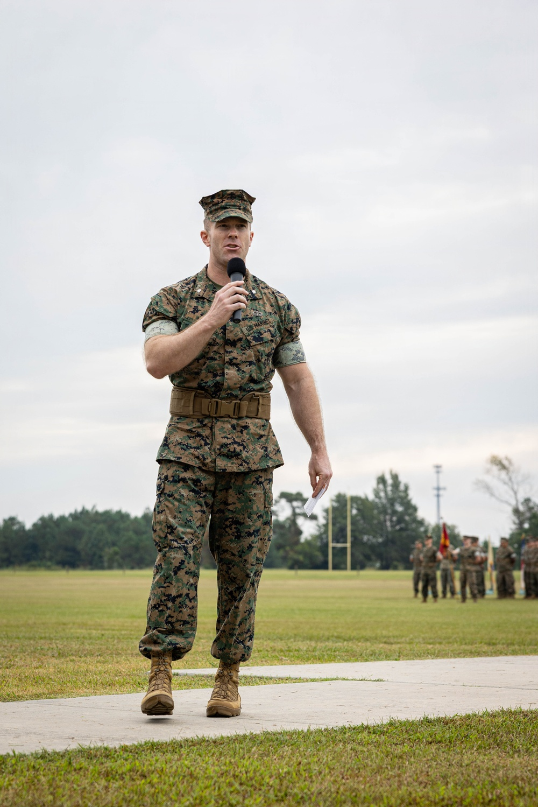

Camp Lejeune redesignated 1/10 as the Corps' first missile battalion
The 2nd Marine Division said 1st Battalion, 10th Marines redesignated on Oct. 9 from an artillery battalion to a medium missile battalion, the first of its kind in the Marine Corps. Lt. Col. Joseph Mozzi, the commanding officer, said the battalion will employ the Navy-Marine Expeditionary Ship Interdiction System, a ground launcher that carries two Naval Strike Missiles. The Corps says those missiles have an effective range of more than 130 nautical miles and can hit ships or fixed ground targets. Col. William Soucie, commanding officer of 10th Marines, said the system complements cannon artillery rather than replacing it, and that another battalion will keep the howitzers. The official still shows Mozzi speaking at the ceremony on WPT Hill Field.